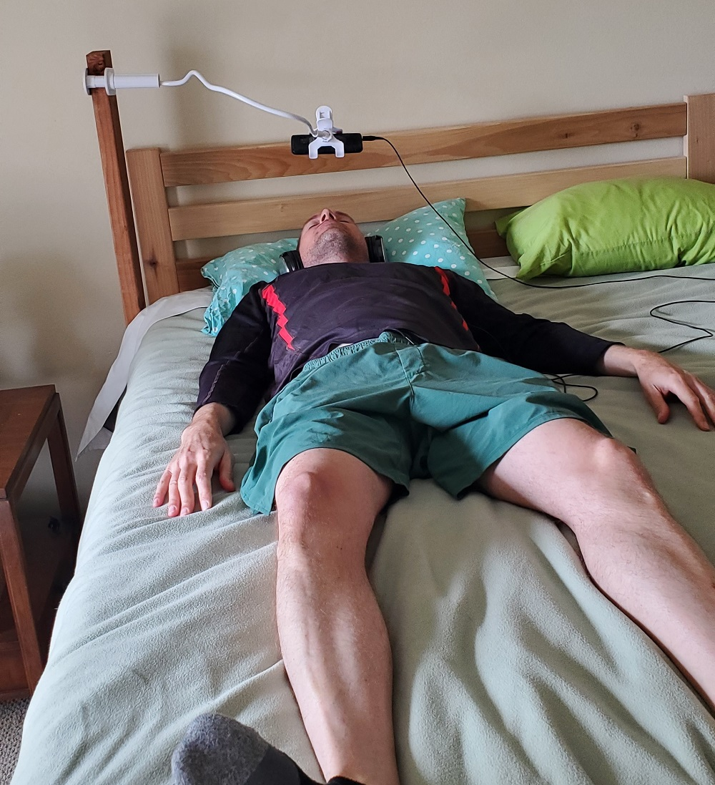
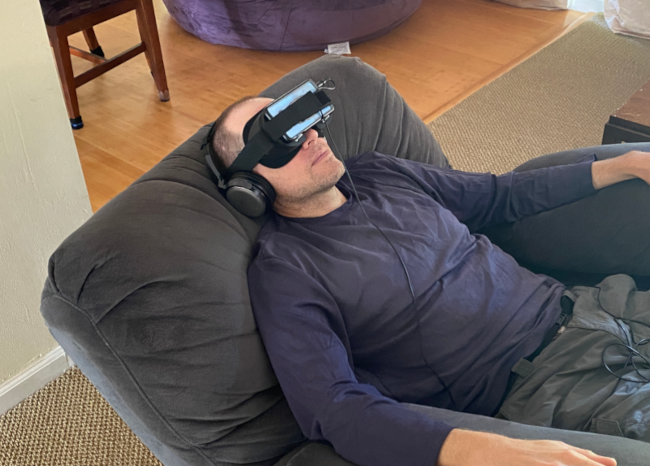
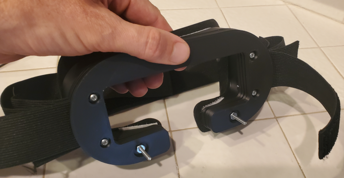
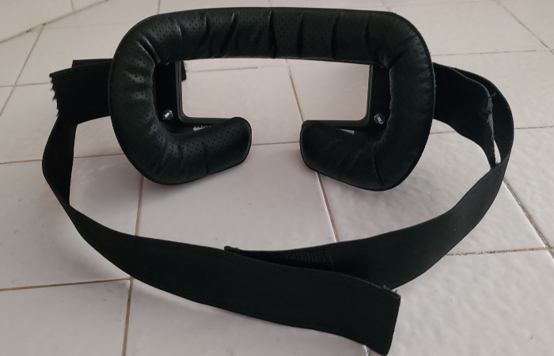

Instructions
-

- Disable the "Adaptaptive Brightness" feature on your phone.
- Adjust the brightness on your phone until you find what is most comfortable for you.
- Temporarily disable notifications on your phone, so you won't be interrupted during your session.
- Install an app that will keep your screen on. For example, install the Screen Alive App from the Google Play Store.
- Connect your headphones to your smartphone.
- Lay on your bed if using a gooseneck phone holder, or recline in your favorite recliner chair if using a headset.
- Press the blue start button, which starts both flashing and music on most browsers.
- Put your smartphone in either the gooseneck holder, virtual reality headset, or a custom headset described below.
- Close your eyes.
- Press anywhere on the screeen to stop the flashing.
Laying on a bed in a dark room with a gooseneck phone holder is the best setup. You might need to clamp a piece of wood that supports the gooseneck phone holder.
Reclining in a comfortable chair and using a virtual reality headset or a custom headset is fine too.
DIY Mind Machine Custom Headset
Laying on a bed in a dark room, and using a gooseneck phone holder is the best way to use the DIY Mind Machine. This setup avoids having anything touching your face, which can be distracting. You can buy gooseneck phone holders on Amazon or Temu. The cheap $6 holders that are sold on Temu work great. However, if you don't have access to a dark room, then a headset is fine too. Virtual reality headsets are ok, but this custom headset is a little more comfortable than the virtual reality headsets I tested:
- The custom headset is 3D printed
- 
- 
- Find someone who can 3D print these custom parts for the main body and front plates. I use OCpartsupply. Download the .stl files.
- Purchase the Elastic Bands for Wigs and Foam Face Replacement Face Cover Pad
- Purchase six #4-40 x 1" pan head machine screws, and six nuts
- Purchase 3/4" wide velcro strips. You will only need to use the "hook" or "prickly" side of the velcro.
- Follow the assembly instructions below.
- Assembly Instructions for Custom Headset using 3D Printed Parts:
- Cut each strap in half. Feed the straps through the slots. Use the front slot for your phone, back slot for your head.
- Secure the two most outer plates with the two machine screws and nuts that protrude outward, as shown in the picture above.
These screws will support the phone, along with the velcro straps. - Secure all of the plates to the main body using the remaining machine screws and nuts.
- Cut some 3/4" wide velcro strips ("hook" or "prickly" side) so that the velcro fits on the top and bottom rim of the main body.
- Attach the face cover pad to the rim of the main body. The face cover pad will stick to the velcro.
- Adjust the straps if necessary. Trim the excess strap once you are satisfied with the fit.